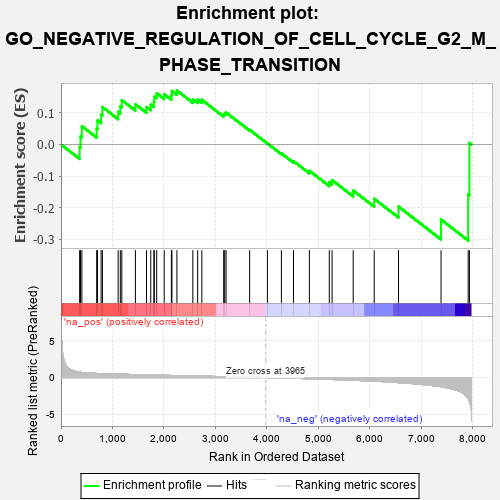

| | | Dataset | 7d |
| Phenotype | NoPhenotypeAvailable |
| Upregulated in class | na_neg |
| GeneSet | GO_NEGATIVE_REGULATION_OF_CELL_CYCLE_G2_M_PHASE_TRANSITION |
| Enrichment Score (ES) | -0.30384436 |
| Normalized Enrichment Score (NES) | -0.8515735 |
| Nominal p-value | 0.7233251 |
| FDR q-value | 0.98185366 |
| FWER p-Value | 1.0 |
Table: GSEA Results Summary

Fig 1: Enrichment plot: GO_NEGATIVE_REGULATION_OF_CELL_CYCLE_G2_M_PHASE_TRANSITION
Profile of the Running ES Score & Positions of GeneSet Members on the Rank Ordered List
| PROBE | GENE SYMBOL | GENE_TITLE | RANK IN GENE LIST | RANK METRIC SCORE | RUNNING ES | CORE ENRICHMENT | | 1 | HUS1 | | | 362 | 0.735 | -0.0085 | No |
| 2 | CLSPN | | | 379 | 0.719 | 0.0258 | No |
| 3 | NBN | | | 405 | 0.696 | 0.0578 | No |
| 4 | MRE11 | | | 693 | 0.560 | 0.0499 | No |
| 5 | CDC6 | | | 709 | 0.557 | 0.0762 | No |
| 6 | RAD21 | | | 779 | 0.538 | 0.0946 | No |
| 7 | BLM | | | 804 | 0.531 | 0.1185 | No |
| 8 | RINT1 | | | 1110 | 0.462 | 0.1033 | No |
| 9 | PSMD7 | | | 1152 | 0.454 | 0.1211 | No |
| 10 | PSMD2 | | | 1181 | 0.450 | 0.1402 | No |
| 11 | RBX1 | | | 1445 | 0.401 | 0.1274 | No |
| 12 | ORC1 | | | 1661 | 0.363 | 0.1186 | No |
| 13 | MRNIP | | | 1743 | 0.346 | 0.1259 | No |
| 14 | RAD17 | | | 1804 | 0.336 | 0.1353 | No |
| 15 | PSMD4 | | | 1811 | 0.335 | 0.1515 | No |
| 16 | PSMD6 | | | 1858 | 0.326 | 0.1621 | No |
| 17 | FOXO4 | | | 2004 | 0.304 | 0.1592 | No |
| 18 | PSME4 | | | 2143 | 0.285 | 0.1562 | No |
| 19 | DTL | | | 2154 | 0.284 | 0.1693 | No |
| 20 | PSMF1 | | | 2251 | 0.268 | 0.1707 | No |
| 21 | PSMD5 | | | 2560 | 0.218 | 0.1429 | No |
| 22 | VPS4A | | | 2654 | 0.205 | 0.1416 | No |
| 23 | CUL1 | | | 2735 | 0.193 | 0.1412 | No |
| 24 | FOXN3 | | | 3159 | 0.129 | 0.0944 | No |
| 25 | PSMD9 | | | 3179 | 0.125 | 0.0983 | No |
| 26 | FZR1 | | | 3205 | 0.122 | 0.1013 | No |
| 27 | SKP1 | | | 3663 | 0.049 | 0.0462 | No |
| 28 | SYF2 | | | 4008 | -0.009 | 0.0033 | No |
| 29 | PSME3 | | | 4280 | -0.056 | -0.0281 | No |
| 30 | PINX1 | | | 4515 | -0.097 | -0.0527 | No |
| 31 | TAOK3 | | | 4823 | -0.162 | -0.0832 | No |
| 32 | ATM | | | 5210 | -0.249 | -0.1192 | No |
| 33 | CDK1 | | | 5264 | -0.262 | -0.1127 | No |
| 34 | PSMD1 | | | 5674 | -0.367 | -0.1457 | No |
| 35 | PLK1 | | | 6082 | -0.500 | -0.1717 | No |
| 36 | MIIP | | | 6554 | -0.686 | -0.1964 | No |
| 37 | FBXL7 | | | 7380 | -1.245 | -0.2375 | Yes |
| 38 | PSMD3 | | | 7907 | -2.887 | -0.1580 | Yes |
| 39 | PSMD8 | | | 7931 | -3.286 | 0.0050 | Yes |
Table: GSEA details [plain text format]
Fig 2: GO_NEGATIVE_REGULATION_OF_CELL_CYCLE_G2_M_PHASE_TRANSITION: Random ES distribution
Gene set null distribution of ES for GO_NEGATIVE_REGULATION_OF_CELL_CYCLE_G2_M_PHASE_TRANSITION